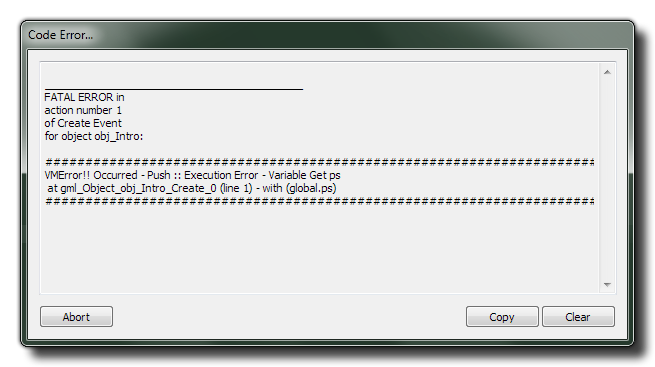

即使是经过了在代码编辑器中的语法检查以及后续编译器对你的代码的检查，仍然存在一些出错的情况。在绝大多数情况中这将会抛出一个看起来像这样的VM（虚拟机）错误：

虚拟机错误通常是比编译错误更严重的，因为这意味着在你的代码中存在的错误严重到代码编辑器和编译器都不能检测到，并且本身你应当注意所有这样的错误。当一个错误发生时，你可以使用弹窗上的"copy"按钮来把错误复制到剪切板上，你接下来能将其粘贴到一个文本文件中（或者别的位置）以供日后参考。
某些错误信息将会被一个负值作为前缀修饰。这些值具有以下的可能值能够被用于准确定位错误的确切本质以及它所指代什么：
| 前缀 | 作用域 |
|---|---|
| -1 | 自身（self） |
| -2 | 对方（other） |
| -3 | 全体（all） |
| -4 | 没有（noone） |
| -5 | 全局（global） |
| -6 | 不定（由globalvar声明） |
| -7 | 局部（local） |
VM运行器可能的错误如下所示：
注意: 所有运行期错误将会尝试并指出引起崩溃的物体或脚本。
- 比较
DoSet ::Invalid comparison type
这代表了运行器尝试比较了两个不兼容的数据类型，比如一个实数和一个字符串。
- 转换
DoConv:: Execution Error
这代表了一种数据类型转换为另一种数据类型时的错误。
- 相加
DoAdd:: Execution Error
当使用加法（+）表达式时有东西出错了。
- 相乘
DoMul:: Execution Error
当使用乘法（*）表达式时有东西出错了。
- 相减
DoSub:: Execution Error
当使用减法（-）表达式时有东西出错了。
DoSub:: Execution Engine - Cannot operate on string type
你在尝试对错误的变量类型进行相减。（比如实数被字符串减）。
- 相除
DoDiv:: Execution Error
当使用除法（/或div）表达式时有东西出错了。
DoDiv:: Execution Engine - Cannot operate on string type
你在尝试对错误的变量类型进行相除。（比如实数被字符串除）。
DoDiv:: Divide by zero
你在尝试除以0
- 余数
DoMod:: Execution Error
当使用求余（mod）表达式时有东西出错了。
DoMod:: Execution Engine - Cannot operate on string type
你在尝试对错误的变量类型进行求余。（比如求实数被字符串除的余数）。
- 位且（位与）
DoAnd:: Execution Error
当使用位且（&）表达式时有东西出错了。
DoAnd:: Execution Engine - Cannot operate on string type
你在尝试对错误的变量类型进行位且。（比如尝试对一个实数和一个字符串求位与）。
- 位或
DoOr:: Execution Error
当使用位或（|）表达式时有东西出错了。
DoOr:: Execution Engine - Cannot operate on string type
你在尝试对错误的变量类型进行位或。（比如尝试对一个实数和一个字符串求位或）。
- 位异或
DoXor:: Execution Error
当使用位异或（^）表达式时有东西出错了。
DoXor:: Execution Engine - Cannot operate on string type
你在尝试对错误的变量类型进行位异或。（比如尝试对一个实数和一个字符串求位异或）。
- 位左移
DoShl:: Execution Error
当对一个值进行位左移（<<）时有东西出错了。
DoShl:: Execution Engine - Cannot operate on string type
你在尝试对错误的变量类型进行位左移。（比如尝试对一个字符串进行位左移）。
- 位右移
DoShr:: Execution Error
当对一个值进行位右移（>>）时有东西出错了。
DoShr:: Execution Engine - Cannot operate on string type
你在尝试对错误的变量类型进行位右移。（比如尝试对一个字符串进行位右移）。
- 求负
DoNeg:: Execution Error
你在尝试将一个变量转换为相反数（-val），而这个类型并不允许这种运算。
- 逻辑非
DoNot:: Execution Error
你在尝试将求一个变量类型的逻辑非（!val），而这个类型并不允许这种运算。
- 入栈
Push:: Execution Error - Variable Index out of range (var)
正在访问的变量超出了运行器所建立的范围。
Push:: Execution Error - Variable Get (var)
被给定的变量是未定义的或者是不可知的。
- 出栈
Pop:: Execution Error - Variable Index out of range (var)
正在访问的变量超出了运行器所建立的范围。
Pop:: Execution Error - Variable Get (var)
被给定的变量是未定义的或者是不可知的。
- with结构
Cannot use global in with statement
你在尝试在"with"语句中使用"global"作为表达式，换言之：
with (global)
{
//do something;
}
Cannot use local in with statement
你在尝试在"with"语句中使用"local"作为表达式，换言之：
with (local)
{
//do something;
}
- 常规
DoCall:: Execution Engine type error
这是一个在虚拟机内未定义的错误。你应该在发生这种错误时提交一个错误报告： （关于如何这么做，详情参见： The Help Menu）
Stack Overflow...
一个堆栈溢出发生于在调用栈使用太多的内存以及你的游戏尝试去使用比调用栈可用空间更大的空间（也就是说，当它尝试去访问超出调用栈边界的内存时，从根本上是一个缓冲区溢出），这个栈就被称为溢出了，导致了程序的崩溃。重新启动你的电脑和GameMaker: Studio，如果错误仍然出现请立即联系客服并且/或提交一个错误报告（如前文所述）。